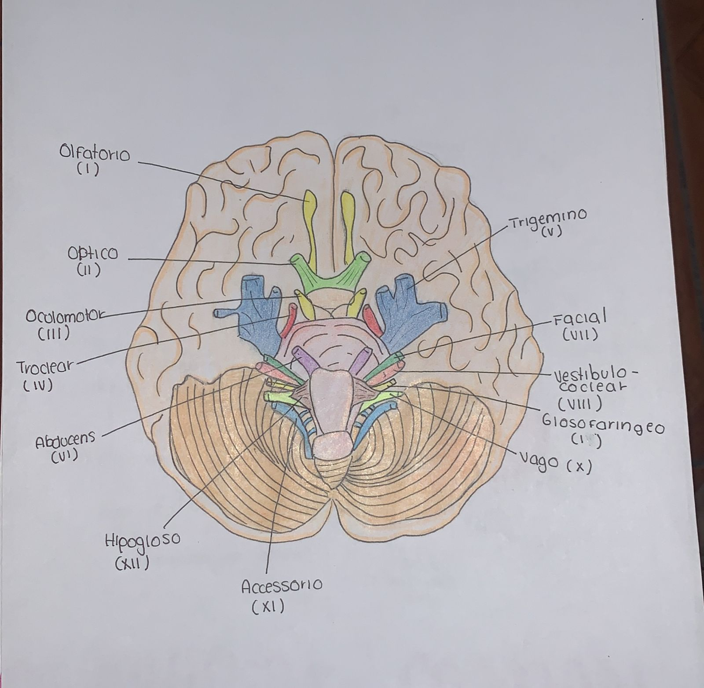

Función: Sensoria. Responsable del sentido del olfato.
Funcion: sensorial. Responsable de la vision
Funcion: motor. Controla la mayoría de los músculos del ojo, el párpado superior y la pupila.
Funcion: motor. Controla el músculo oblicuo superior del ojo, que permite mover el ojo hacia abajo y hacia afuera.
Funcion: motor. Controla el músculo recto lateral del ojo, permite mover el ojo hacia afuera.
Funcion: motor. Controla los músculos de la lengua, esenciales para hablar y tragar.
Función: motor. Inerva los músculos del cuello y la parte superior de los hombros (esternocleidomastoideo y trapecio).
Función: mixto. Muy importante en la regulación de funciones autónomas como la frecuencia cardíaca, la digestión y la respiración. También participa en la fonación y la deglución.
Función: Mixto. Controla parte del gusto (1/3 posterior de la lengua), la deglución y regula la presión arterial a través del seno carotídeo.
Función: Sensorial. Responsable de la audición y el equilibrio.
Función: Mixto. Controla los músculos de la expresión facial, algunas glándulas (lagrimales y salivales) y el gusto de los 2/3 anteriores de la lengua.
Función: Mixto. Responsable de la sensibilidad de la cara y controla los músculos de la masticación.